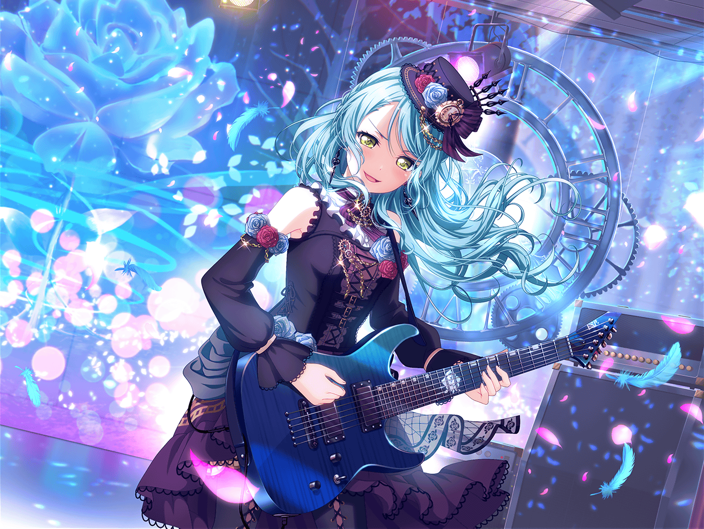
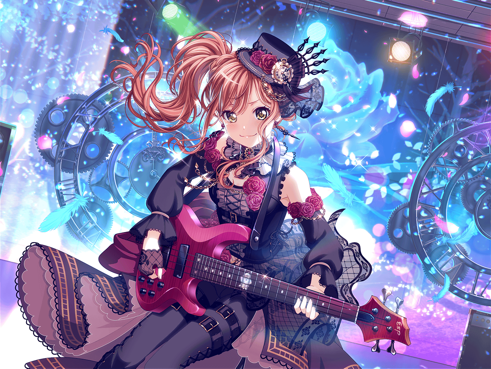
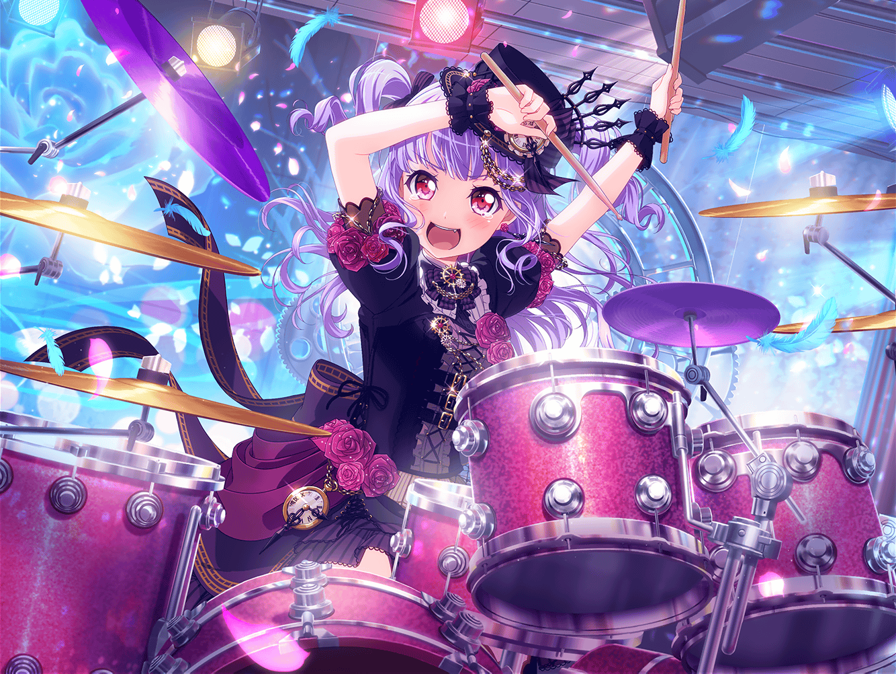
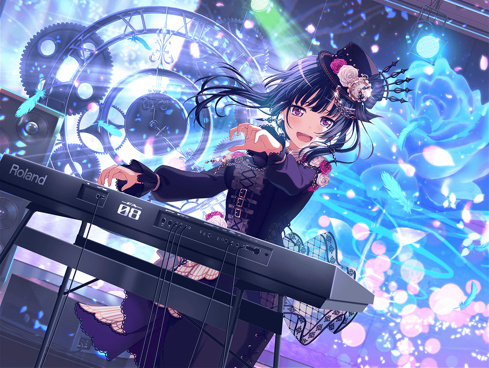
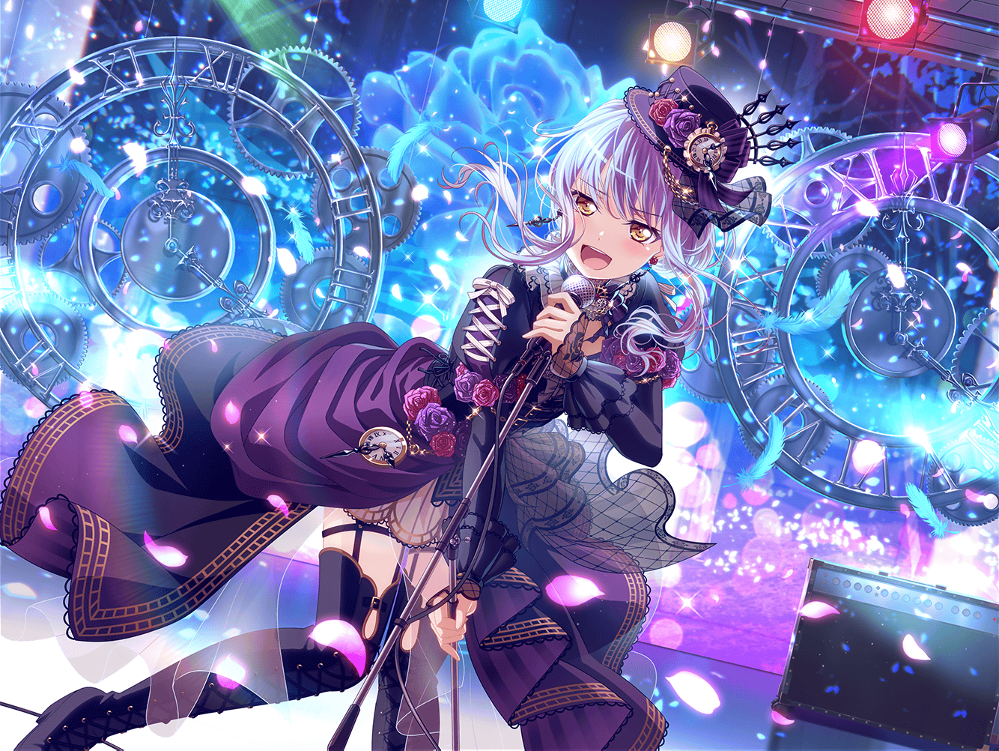

ステージ
香澄
うう〜〜……なんか緊張してきちゃった……！
有咲
なんで香澄が緊張してんだよ……
今日出るのはRoseliaだろ？
香澄
けどさ〜！ この間の友希那先輩、なんだか
つらそうだったし……ちょっと心配でさ
有咲
まあ、確かに……
香澄
友希那先輩、Roseliaのみんな……がんばれ〜……っ！

楽屋
友希那
燐子、新しい衣装は持ってきてくれた？
燐子
はい。こちらを……
紗夜
いつも、本当に素敵な仕上がりね
リサ
うん！ じゃ、早速着替えよー！
あこ
おおおーーっ！！！ すごいっ、みんなすごいよっ！
超、超、超〜〜似合ってるよ〜〜！！
燐子
うん……ギリギリまで……頑張ってよかったね……
リサ
燐子、急にアクセサリーパーツのお店に行ってきますっ！ って
走って行っちゃった時はビックリしたよ〜
燐子
すみません……どうしても……このモチーフを……
取り入れたくて……
友希那
時計や歯車……？
私達にしては珍しいモチーフね
燐子
わたし達の時は……一度、止まりました……
ですが……今再び、こうして……時計の針は進もうと……
しています……
燐子
これからも『わたし達』で進み続けたい……
そんな気持ちで……このモチーフを……入れました……
友希那
素敵なモチーフだと思うわ。過去の私達と、
これからの私達をつなぐ、大切な衣装になりそうね
あこ
早くこの衣装を着て、
超カッコイイRoselia、お客さんに見せたいよ〜！！
紗夜
そう焦らずとも、もう間もなく本番よ
リサ
よーっし、本番、がんばろうっ！！

ステージ
友希那
……Roseliaです
友希那
――まずは１曲
香澄
んーーーー！ やっぱり、Roseliaの人達って
本当にかっこいい！ 有咲、すごいねっ！
有咲
友希那先輩も、絶好調って感じだな
香澄
うんっ！！
友希那
次は新曲です。『私達』で作った新しい曲、
どうか、聞いてください
友希那
『Neo-Aspect』――

紗夜
（リズムを刻むギターの音が……思わず走りそうになる……）
紗夜
（……でも、今はただ、思いに任せて演奏したい……！）

リサ
（友希那の横顔、すごく凛々しい。アタシは、これからも
５人のステージでこの横顔を見ていたい）
リサ
（他のどこでもない、アタシ達のステージで……！）

あこ
（あこ、カッコイイドラマーを目指してたけど、
これからは、そうじゃない！）
あこ
（あこは、カッコイイRoseliaのドラマーになりたいっ！！
この、超超超カッコイイ音楽を、
これからもみんなと一緒にやりたいっ！）

燐子
（時計の針が、進んでいくのがわかる……
わたし達の歯車が、噛み合って、音にのって……）
燐子
（これが、『わたし達』の音……！）

友希那
（歌う事に罪悪感を感じた日……
未熟でも歌っていいと赦された日……）
友希那
（それでも私はまだ、自分のことを好きになれなかった！
いつか好きになれたら……そう思って歌い続けていた）
友希那
（でも、道は見えなかった。ずっと、心の片隅に
ひっかかったままだった、歌への気持ち……）
友希那
（今なら、少しだけ好きといえるかもしれない）
友希那
（この５人で奏でる音にのる、私の歌を――！！！）
楽屋
紗夜
……なんだか、信じられません。
今日の私達の演奏……
燐子
はい……わたしも……
あこ
あこ、まだ手が震えてます……！
リサ
なんだろう……この感じ……
友希那
……本当は、本番直前まで怖かったの
友希那
『Roselia』とお客さんに名乗ることが。
……本当に私は、私達はRoseliaでいられている？
また、離れていってしまわないか？
友希那
けど、歌ってみて思ったわ。
私達はRoseliaなのだと
友希那
だから、これからもその熱を……誇りを持って
演奏をし続けていきましょう
リサ
〜〜〜〜〜っ！
友希那〜〜〜！！
友希那
リサ！？ ど、どうしたの、急に抱きついて……！
リサ
だ、だって……ごめん……アタシ、友希那のこと
ホントに心配で……っ！
リサ
変わらなきゃダメだって、ずっと友希那のこと、
甘やかさないようにってしてたんだけど、ほんとにほんとに
ずっと、心配で……！
リサ
本当に、本当に……戻ってきてくれて、よかった……っ！
また、５人で集まれて、本当によかったなって思ったら
もう、我慢できなくって……！ うう……っ！！
あこ
あこも、嬉しいですっ！
こんなにカッコイイみんなと、カッコイイ演奏ができて……
あこ、すっごくすっごく誇りに思ってます！
友希那
二人共……
友希那
……あまり、泣いてばかりでも困るわ。
これから、反省会をしなくちゃ
紗夜
ええ、そうね。私達の課題はまだまだあります
燐子
ふふ……はい……っ！
リサ
それじゃあ、みんなで……行こっか。いつものとこ